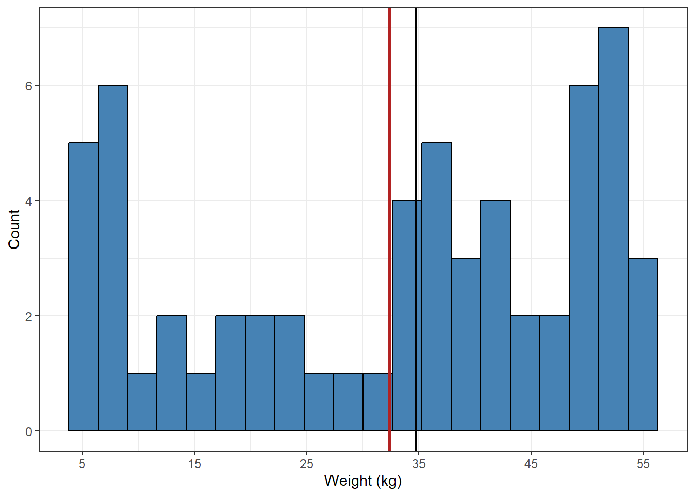
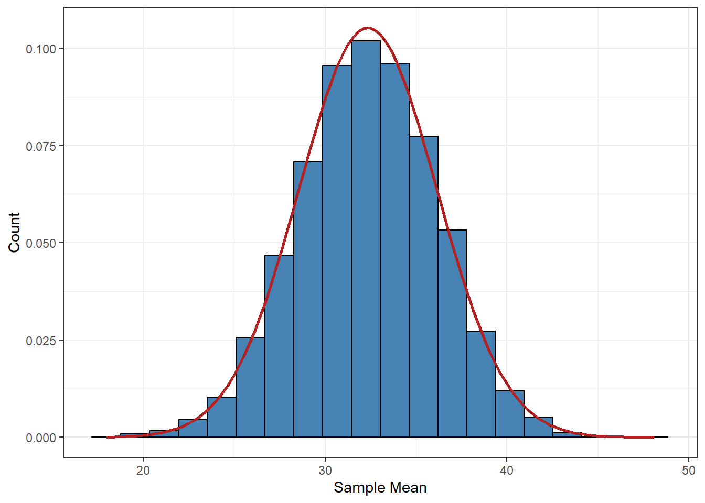
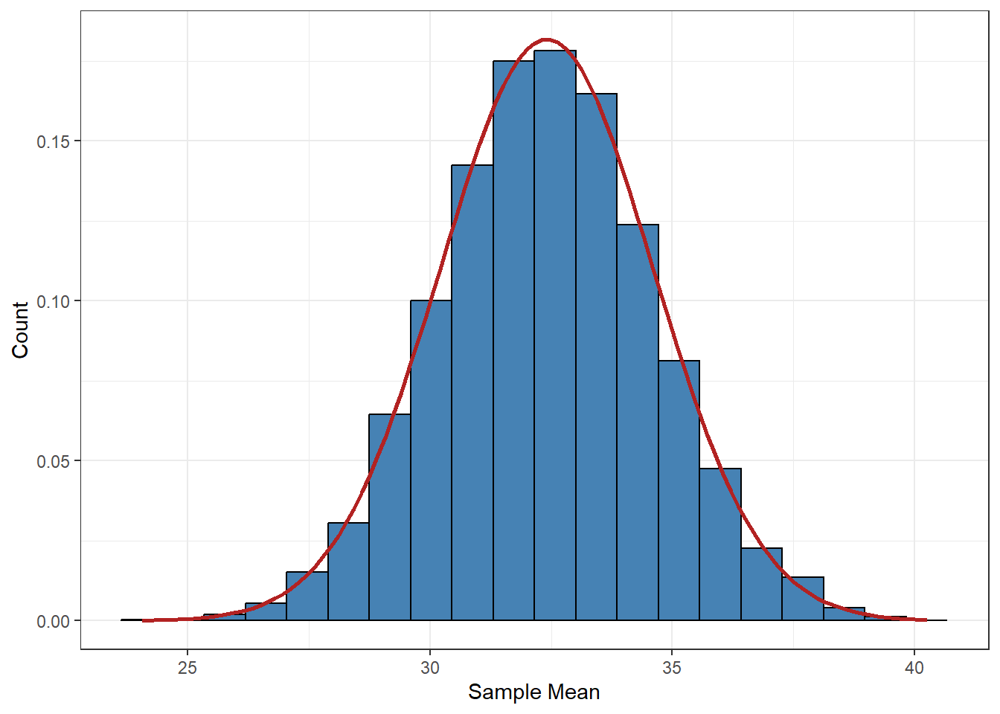
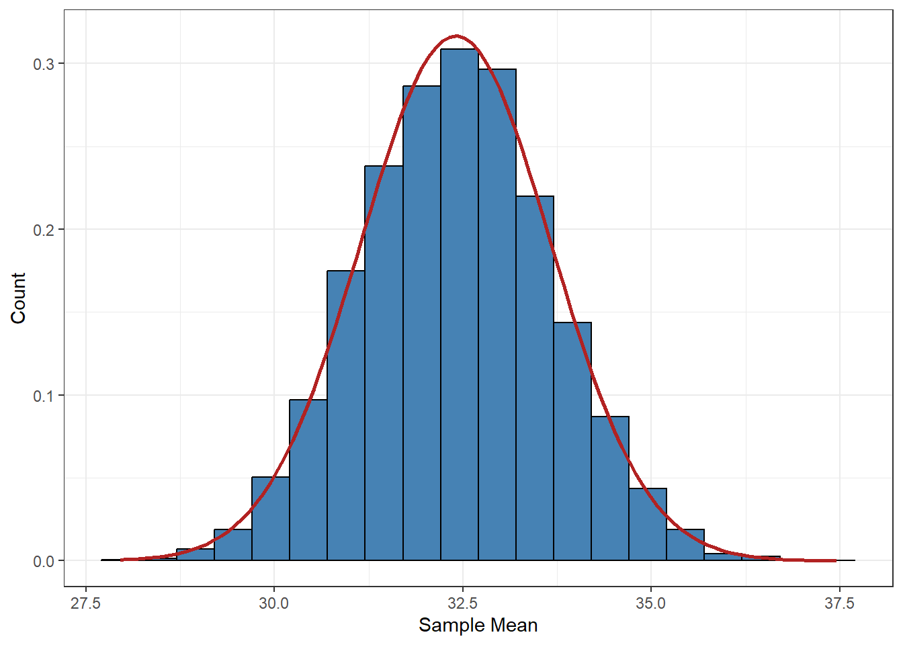

In the previous chapter we have focused on probability distributions for a random variable that describes a characteristic of the observed unit. We can also consider a sample statistic — e.g. the sample mean — a random variable because the units the statistic is calculated from are drawn randomly from a population, thereby being affected by randomness. The probability distribution of all statistics calculated from all possible samples of the same size is called a sampling distribution.
Sampling distributions are a vital part of statistical inference — the process of interpreting the unknown population parameter based on the sample statistic — which we will begin covering in the next chapter. However we must first get an understanding of the properties of a sampling distribution and a couple of laws that can be used to determine the shape of them.
11.1 Simulation of the sampling distribution
The sample mean \(\bar{X}\) is an estimator1 of the population mean \(\mu\) because it is used to estimate the value of the unknown parameter. Depending on the sample drawn, the sample mean will result in different values.
Say we want to measure the weight of a population of 60 wolves located in Southern Sweden (adapted from Svensson et al. (2023)) by randomly sampling 5 wolves. For the purposes of this example, assume the population weights of all wolves are found in wolves2023.csv.
wolves <-read_csv("wolves2023.csv")wolves |>ggplot() +aes(x = weight) +geom_histogram(bins =20,fill ="steelblue", color ="black" ) +theme_bw() +scale_x_continuous(breaks =seq(5, 60, by =10)) +labs(x ="Weight (kg)", y ="Count")
The distribution of X — the weight — is skewed towards the higher values. We can also calculate the population mean from the given data to 32.407 kg.
Important
Normally we do not have the possibility to calculate the population mean unless we conduct a census, that is gather information from all units in the population. We only do this for pedagogical purposes in this chapter to visualize the properties of the sampling distribution.
In practice we use the theories shown here as the basis for our next chapters where we only have information from a sample of the population.
So let us draw a sample from the population using the slice_sample function. The argument n controls how many units to sample and without any other additional arguments, we will draw the 5 units completely at random.
# Draws a sample of size 5 wolvesSample <- wolves |>slice_sample(n =5)# Visualizes the population distribution, its mean and the sample meanwolves |>ggplot() +aes(x = weight) +geom_histogram(bins =20,fill ="steelblue", color ="black" ) +theme_bw() +scale_x_continuous(breaks =seq(5, 60, by =10)) +labs(x ="Weight (kg)", y ="Count") +# Adds the population meangeom_vline(xintercept =mean(wolves$weight), color ="firebrick", linewidth =1 ) +# Adds the sample meangeom_vline(xintercept =mean(wolvesSample$weight), color ="black", linewidth =1 )
We can see that the sample mean (black vertical line) overestimates the population mean (red vertical line) but if we were to draw another sample of the same size the sample mean would be a different value.

Let us simulate — make the computer do a lot of work — a large number of samples of the same size. We can code this in various different ways but the pseudo code2 should look something like this:
Draw a sample of size 5,
Calculate the mean of the sample,
Repeat 1-2 m times and save all sample means.
First we create a function of our own that draws a sample from the given data and returns the sample mean. This is step 1 and 2 of the pseudo code.
drawSample <-function(wolves, n){# Draw a sample of size n sample <- wolves |>slice_sample(n = n)# Calculate sample mean mean <- sample$weight |>mean()# Return the valuereturn(mean)}
Next we need some way to replicate the function as many times as we want. This is step 3 of the pseudo code. The function replicate does just that, with n defining how many times to run the expression in the expr argument.
Note
The sampling distribution is the distribution of all sample means from all possible samples of the same size. With 30 units in the population and sampling 5 units in a sample there exist choose(n = 30, k = 5) = 142506 possible samples that can be created. This is a lot even for the computer to run, so by repeating the sampling method a large number of times we can approximate how the sampling distribution should look like.
# Runs the function drawSample 10 000 times and returns a vector of all sample means.sampleMeans <-replicate(n =10000,expr =drawSample(wolves, n =5) )sampleMeans |>tibble() |>ggplot() +# Changes the y-axis to density instead of absolute frequenciesaes(x = sampleMeans) +geom_histogram(aes(y =after_stat(density)),bins =20, fill ="steelblue", color ="black" ) +theme_bw() +# Adds the population meangeom_vline(xintercept =mean(wolves$weight), color ="firebrick", linewidth =1 ) +labs(x ="Sample Mean", y ="Density")
The shape of the distribution seems to be centered around the population mean (red line) with a relative symmetrical decline in frequency to the extreme weights. This looks very similar to a normal distribution, so let us draw the curve of the distribution on top of the histogram using the mean and standard deviation of the 10 000 samples as its properties.
sampleMeans |>tibble() |>ggplot() +aes(x = sampleMeans) +geom_histogram(aes(y =after_stat(density)),bins =20, fill ="steelblue", color ="black" ) +theme_bw() +labs(x ="Sample Mean", y ="Count") +# Adds the normal distribution curvegeom_function(fun = dnorm, color ="firebrick",linewidth =1,args =list(mean =mean(sampleMeans), sd =sd(sampleMeans)) )
The normal distribution seems to mimic the shape of the histogram relatively well. There are some discrepancies in the symmetry as well as the position of the center. We can try and increase the sample size to 15.
sampleMeans <-replicate(n =10000,expr =drawSample(wolves, n =15) )sampleMeans |>tibble() |>ggplot() +aes(x = sampleMeans) +geom_histogram(aes(y =after_stat(density)),bins =20, fill ="steelblue", color ="black" ) +theme_bw() +labs(x ="Sample Mean", y ="Count") +# Adds the normal distribution curvegeom_function(fun = dnorm, color ="firebrick",linewidth =1,args =list(mean =mean(sampleMeans), sd =sd(sampleMeans)) )

The curve seems to follow the histogram a bit better with some minor discrepancies. We can increase the sample size once more to 30.

And then again to 45.

This phenomenon we see — that the sampling distribution follows the normal distribution better with larger sample sizes — is due to the central limit theorem. The theorem states that:
A sum (or mean) of a large number of independent and equally distributed variables will be approximately normal distributed.
What constitutes as a large number is can be different in different scenarios, but in the case above we saw that when n > 30, the histogram looked approximately normal. Most literature use n > 30 as the rule of thumb when the central limit theorem can be applied.
11.2 Sampling distribution of the mean
If the random variable X is not normally distributed we need to rely on the central limit theorem to use the normal distribution. If n > 30 we can then state that:
\[
\bar{X} \approx N\left(\mu_{\bar{X}} = \mu_X; \sigma_{\bar{X}} = \frac{\sigma_X}{n}\right)
\tag{11.1}\] where the mean of the sample mean (\(\mu_{\bar{X}}\)) is the same as the mean of X, and the standard deviation of the sample mean (\(\sigma_{\bar{X}}\)) is the standard deviation of X divided by the sample size n.
Within biological data the sample sizes tend to be small, most of the times n < 30. This means that the central limit theorem cannot be applied and we cannot assume that the sampling distribution of \(\bar{X}\) is approximately normal distributed. Instead we would need to rely on properties of linear combinations.
A sum or mean of independent random variables, \(X_1\)-\(X_n\), are examples of linear combinations that keep many of the properties from the original variables. For instance if X follows the normal distribution, the mean of X will also follow the normal distribution regardless of how big the sample is. The same mean and standard deviation as in Equation 11.1 apply and \(\bar{X}\) now follows an exact normal distribution.
11.3 Exercises
For the exercises we will return to the iris dataset seen in earlier chapters (e.g. Section 5.3). For the next questions assume that the petal length of the setosa species is normally distributed with a mean length of 1.46 cm and a standard deviation of 0.174 cm.
What is the probability of finding the mean petal length of 10 setosa plants less than 1.1 cm?
What is the probability of finding the mean petal length of 10 setosa plants between 1.1 and 1.46 cm?
How does the answers to these questions differ from question 3 and 4 in Section 10.3? What law is this evidence of?
Svensson, Linn, Petter Wabakken, Erling Maartmann, Kristoffer Nordli, Øystein Flagstad, Anna Danielsson, Henrikke Hensel, Katarina Pöchhacker, and Mikael Åkesson. 2023. Inventering av varg vintern 2022-2023. Bestandsstatus for Store Rovdyr i Skandinavia;1-2023. Rovdata (NINA) og SLU Viltskadecenter. https://hdl.handle.net/11250/3068933.
The term statistic refers to the summarized measurement of a sample which is calculated by an estimator.↩︎